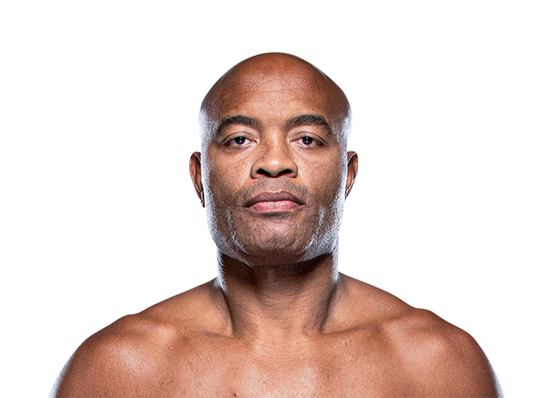
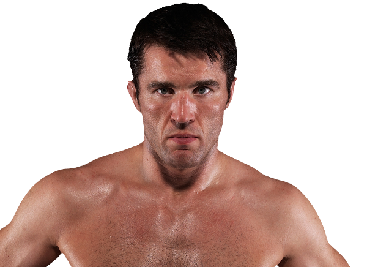
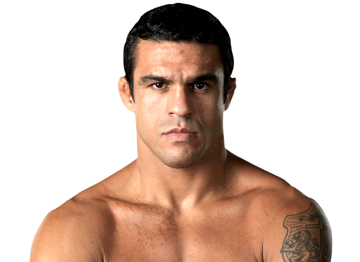
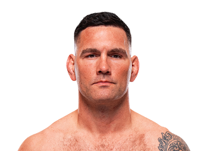
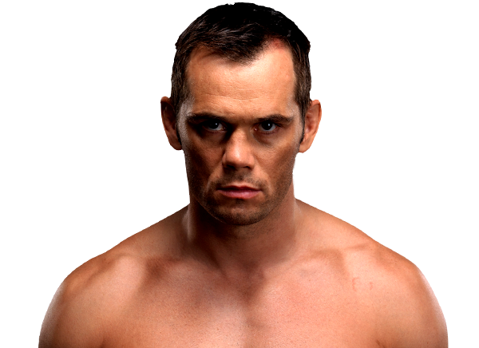
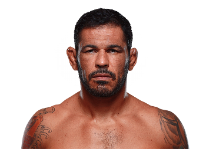
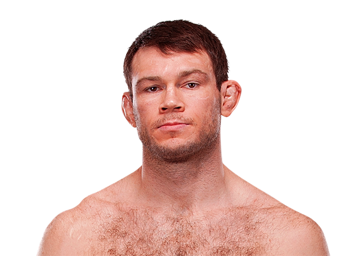
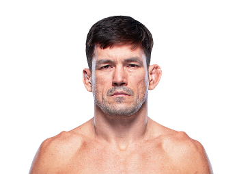

Anderson Silva
É amplamente considerado um dos maiores lutadores de todos os tempos. O brasileiro dominou a categoria dos pesos-médios do UFC, estabelecendo o recorde de maior sequência de vitórias (16) e o segundo maior número de defesas de cinturão consecutivas (10).

Chael Sonnen
O falastrão americano foi o rival mais polêmico e marcante de Anderson Silva. Conhecido por seu wrestling de elite e por provocar intensamente o Brasil, Sonnen chocou o mundo ao dominar Anderson por mais de quatro rounds no UFC 117.

Vitor Belfort
Parceiro de treino de Anderson no passado, protagonizou com ele o "Combate do Século" no UFC 126 em 2011. Belfort era conhecido por suas mãos explosivas e velocidade assustadora desde a adolescência no esporte.

Chris Weidman
O homem que encerrou o reinado de Anderson Silva. O lutador americano de wrestling e jiu-jitsu chocou o mundo no UFC 162 ao nocautear o Spider enquanto este provocava copiosamente no octógono.

Israel Adesanya
Considerado o herdeiro legítimo do estilo plástico e genial de Anderson Silva, o nigeriano enfrentou seu ídolo em 2019. O duelo serviu como uma emocionante passagem de bastão entre duas gerações de campeões dos pesos-médios.

Rich Franklin
Ex-campeão dos pesos-médios e um dos lutadores mais respeitados da organização, protagonizou o início da era de ouro de Anderson Silva. O americano foi destronado pelo "Spider" no UFC 64 em uma das exibições de Muay Thai mais devastadoras da história do MMA, confronto que marcou a passagem de bastão na categoria.

Rodrigo Minotauro Nogueira
Lenda do esporte, ex-campeão do PRIDE e do UFC, teve papel fundamental como mentor e protetor de Anderson Silva. Minotauro acolheu o "Spider" em um momento de desilusão com o MMA, impedindo sua aposentadoria precoce e liderando os treinos que lapidaram o campeão na prestigiada equipe Team Nogueira.

Forrest Griffin
Ex-campeão dos meio-pesados e um dos nomes mais populares da história do esporte, foi o oponente de Anderson na luta que eternizou o estilo "Matrix". No UFC 101, o americano acabou superado pela esquiva milimétrica e pela genialidade do brasileiro, em um nocaute que figura entre os mais plásticos do MMA.

Demian Maia
Um dos maiores especialistas em Jiu-Jitsu que já pisou no octógono, dividiu o cage com o "Spider" no UFC 112, em Abu Dhabi. O confronto tornou-se a luta mais polêmica da carreira de Anderson, marcada por provocações extremas, danças e um clima de rivalidade técnica e psicológica que dividiu os fãs de artes marciais.